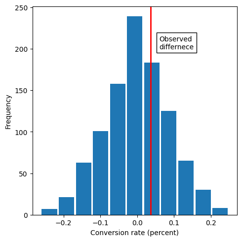

파이썬 통계 02 : 페이지 뷰와 구매
2. 통계적 유의성과 p-value
페이지 A에서 구매 200건, 뷰 23539 페이지 B에서 구매 182건, 뷰 22406
import pandas as pd
import numpy as np
import matplotlib.pylab as plt
import random
from scipy import stats
import statsmodels.api as sm
random.seed(1)
obs_pct_diff = 100 * (200/23739 - 182/22588)
print(f'Observed difference :{obs_pct_diff:.4f}%')
conversion = [0]*45945
conversion.extend([1]*382)
conversion = pd.Series(conversion)
conversion.head()
Observed difference :0.0368%
0 0
1 0
2 0
3 0
4 0
dtype: int64
conversion.tail()
46322 1
46323 1
46324 1
46325 1
46326 1
dtype: int64
## 순열검정
def perm_func(x, nA, nB):
n = nA + nB
idx_B = set(random.sample(range(n), nB))
idx_A = set(range(n)) - idx_B
return x.loc[list(idx_B)].mean() - x.loc[list(idx_A)].mean()
perm_diffs = [100*perm_func(conversion, 23739,22588) for i in range(1000)]
fig, ax = plt.subplots(figsize=(5,5))
ax.hist(perm_diffs, bins=11, rwidth=0.9)
ax.axvline(x=obs_pct_diff, color='red', lw=2)
ax.text(0.06, 200, 'Observed\ndiffernece', bbox={'facecolor':'white'})
ax.set_xlabel('Conversion rate (percent)')
ax.set_ylabel('Frequency')
plt.tight_layout()
plt.show()

1000번의 순열 검정을 통해 얻은 히스토그램을 봤을 때 우연에 의해 만들어진 것으로 보임.
p-value가 0.05 이하이려면 양 극단쪽에 선이 그어져야 함
확실히 하기 위해 p-value를 구한다면
2.1 p-value 구하기
print(np.mean([diff > obs_pct_diff for diff in perm_diffs]))
0.332
2.2 chatGPT 버전
On page A with 200 purchases and 23539 non-purchased views On page B, there are 182 purchases and 22406 non-purchases.
I want to find out if this is statistically significant and use a permutation test to find the p value. Please write the python code
import numpy as np
# Define function to compute difference in purchase rates
def diff_purchase_rates(purchase_counts, non_purchase_counts):
p1 = np.sum(purchase_counts[0]) / np.sum(purchase_counts[0]) + np.sum(non_purchase_counts[0])
p2 = np.sum(purchase_counts[1]) / np.sum(purchase_counts[1]) + np.sum(non_purchase_counts[1])
return abs(p1 - p2)
# Observed difference in purchase rates
purchase_counts = [[200, 23539], [182, 22406]]
obs_diff = diff_purchase_rates(purchase_counts[0], purchase_counts[1])
# Combined array of purchase and non-purchase counts
combined_counts = np.concatenate(purchase_counts)
# Number of permutations
n_permutations = 10000
# Initialize array to store shuffled differences
shuffled_diffs = np.zeros(n_permutations)
# Perform permutations
for i in range(n_permutations):
# Shuffle combined array and split into purchase and non-purchase counts for each web page
np.random.shuffle(combined_counts)
shuffled_purchase_counts = [combined_counts[:len(purchase_counts[0])], combined_counts[len(purchase_counts[0]):]]
shuffled_non_purchase_counts = [combined_counts[len(purchase_counts[0]):], combined_counts[:len(purchase_counts[0])]]
# Compute difference in purchase rates for shuffled arrays
shuffled_diffs[i] = diff_purchase_rates(shuffled_purchase_counts, shuffled_non_purchase_counts)
# Compute p-value
p_value = np.sum(shuffled_diffs >= obs_diff) / n_permutations
print("p-value:", p_value)
p-value: 0.3257
처음 코드에서 결함이 있어서 고침